Tento rok sme sa opat zisli na kazdorocnej akcii na novobanskom tajchu. Trosku v poskromnejsej zostave, ale skalni prisli takmer vsetci a zabavili sme sa uzasne. Gulas sme navarili fantasticky a do rana sme sa bavili pri zivej hudbe.
Tu je par zakladnych aktivit, ktore sme stvarali:
Medzi tohtorocnych ucastnikov patrili
A co su tajchy? Odpoved najdes tu:
 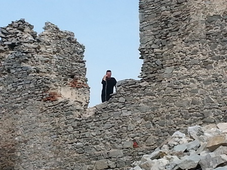
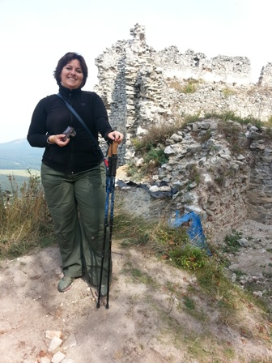
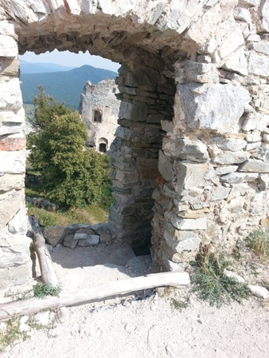
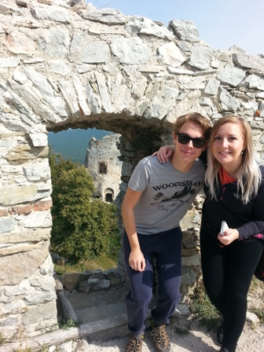
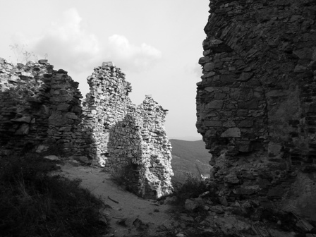
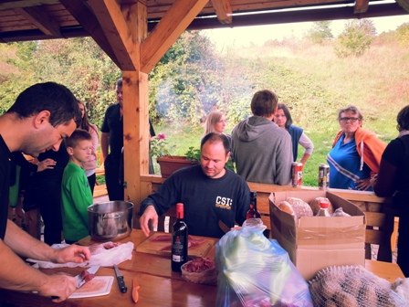
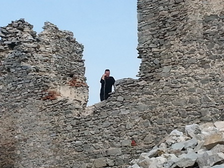
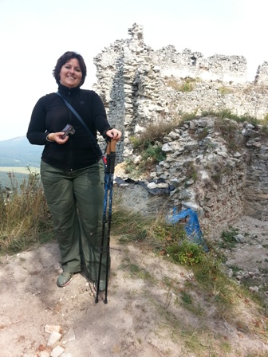
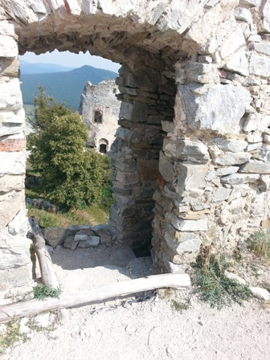
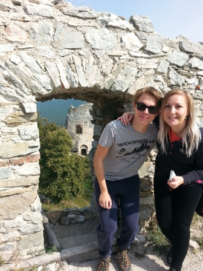
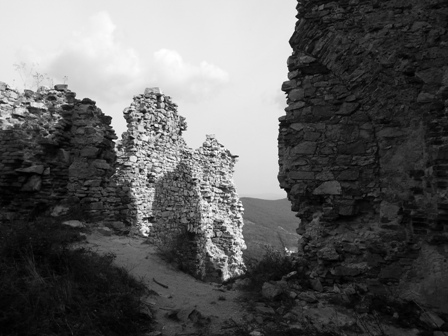
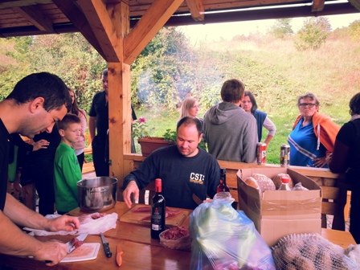